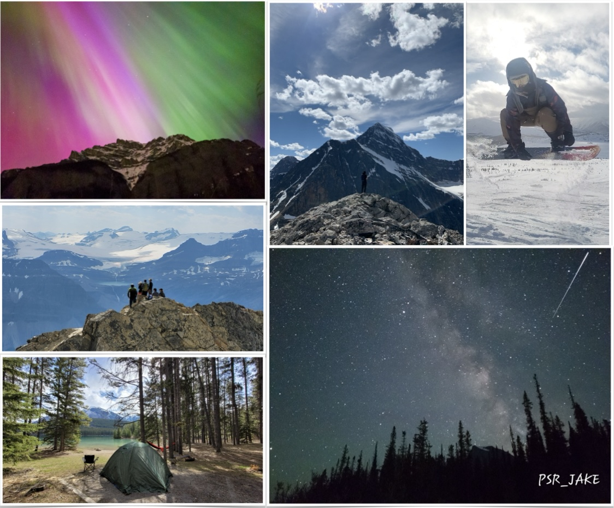

Postdoctoral Fellow
Tsinghua University
Outside of my academic pursuits, I enjoy travelling and outdoor activities the most, such as hiking, camping, snowboarding. This section is dedicated to sharing a bit about what I do when I'm not focused on astronomy and astrophysics.
I have been living in Edmonton, Alberta, since August 2019. This city is renowned for its ice hockey team, the Oilers, a five-time Stanley Cup winner. Edmonton's proximity to the majestic Rocky Mountains (a four-hour drive to Banff or Jasper National Park) makes it a great gateway to outdoor adventures. I enjoy spending my spare time in the mountains, where I find comfort, relaxation, inspiration, and renewed energy.
Below is a map highlighting the hiking trails, campgrounds, ski resorts, and other places I’ve explored.